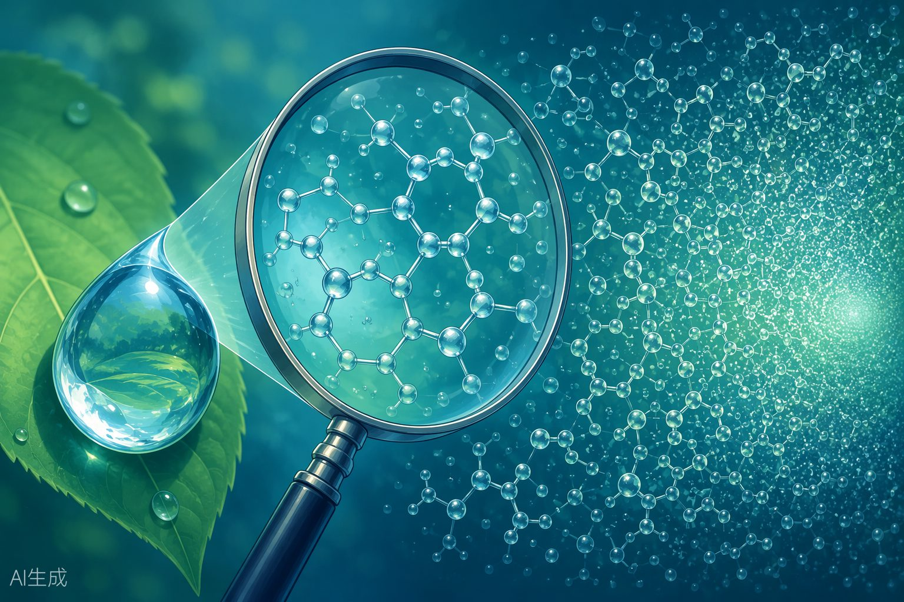

铁和铝是两种最重要的金属元素，Fe 的变价特性（+2/+3）和 Al的两性（既溶于酸又溶于碱）是高考的核心考点。
| 转化 | 化学方程式 | 条件 |
|---|---|---|
| Fe→Fe2+ | 2H+Fe2++Fe+=Cu2+=H2↑；Fe+Fe2++Cu | 弱氧化剂（H+、Cu2+、S、I2） |
| Fe→Fe3+Fe2+→Fe3+Fe3+→Fe2+ | =2Fe+3Cl22FeCl32Fe2+=+Cl22Fe3+2Cl−+2Fe3++Fe=3Fe2+；2Fe3++Cu2Fe2+Cu2+=+ | 强氧化剂（Cl2、Br2、浓HNO3）氧化剂（Cl2、O2、H2O2、HNO3、KMnO4）还原剂（Fe、Cu、I−、S2−） |
| Fe3+→Fe | Fe2O3+3CO=2Fe+3CO2 | 高温还原（铝热反应、CO还原） |
| 物质 | 与强酸反应 | 与强碱反应 |
|---|---|---|
| AlAl2O3Al(OH)3 | 6H+2Al3+2Al+=3H2↑+6H+=Al2O3+2Al3++3H2O3H+=Al(OH)3+Al3++3H2O | 2OH−2Al++2H2O=−3H2↑2AlO2+2OH−=Al2O3+−2AlO2+H2OOH−=Al(OH)3+−AlO2+2H2O |
| 方法 | 适用范围 | 举例 |
|---|---|---|
| 电解法 | 活泼金属（K~Al） | 2Al2O3(熔融)=4Al+3O2↑；2NaCl(熔融)=2Na+Cl2↑ |
| 热还原法 | 中等活泼金属（Zn~Cu） | Fe2O3+3CO=2Fe+3CO2；铝热反应：2Al+Fe2O3=Al2O3+2Fe |
热2HgO=2Hg+O2↑；
不活泼金属分解 2Ag2O=4Ag+O2↑（Hg、Ag）法
| 离子 | 检验方法 | 现象 |
|---|---|---|
| Fe3+ | 加KSCN溶液 | 溶液变血红色：Fe3++3SCN−=Fe(SCN)3 |
| Fe3+ | 加NaOH溶液 | 红褐色沉淀：Fe3++3OH−=Fe(OH)3↓ |
白色沉淀→灰绿色→红褐色：Fe2+加 NaOH+2OH−=Fe(OH)2↓，Fe2+溶液4Fe(OH)2+O2+2H2O=4Fe(OH)3先加KSCN 不Fe2+加氯水后变血红色变色，再加氯水先产生白色沉淀，后沉淀溶解：Al3+加过量+3OH−=Al(OH)3↓，Al3+NaOHAl(OH)3+OH−=AlO2−+2H2O溶液
下列试剂中，不能使 Fe2+ 转化为 Fe3+ 的是（ ）A. 氯水 B. KMnO4(H+) C. 稀硝酸 D. Fe 粉
A √ Cl2 + 2Fe2+ = 2Fe3+ + 2Cl−− + 5Fe2+ + 8H+ = Mn2+ + 5Fe3+ + 4H2OB √ MnO4C √ 3Fe2+ + 4H+ + NO3− = 3Fe3+ + NO↑ + 2H2OD × Fe 粉使 Fe3+→Fe2+：2Fe3++Fe=3Fe2+，不能使 Fe2+→Fe3+。
下列物质中，既能与盐酸反应又能与 NaOH 溶液反应的是（ ）
① Al ② Al2O3 ③ Al(OH)3 ④ NaHCO3 ⑤ (NH4)2CO3A. ①②③ B. ①②③④ C. ①②③⑤ D. 全部
①②③ 铝及其氧化物/氢氧化物具有两性，均能与酸和碱反应。
−+H+=H2O+CO2↑；与 NaOH 反④ NaHCO3：与 HCl 反应 HCO3−+OH−=CO32−+H2O。应 HCO32−+2H+=H2O+CO2↑；与 NaOH⑤ (NH4)2CO3：与 HCl 反应 CO3++OH−=NH3↑+H2O。反应 NH4全部都能与酸和碱反应，选 D。
要证明某溶液中不含 Fe3+ 而含有 Fe2+，正确的操作是（ ）A. 滴加 KSCN 溶液B. 滴加 NaOH 溶液C. 先滴加 KSCN 溶液，不变色，再滴加氯水D. 先滴加氯水，再滴加 KSCN 溶液
A: 只加 KSCN，若不变色只能说明无 Fe3+，不能证明含 Fe2+。
B: 加 NaOH，Fe2+ 产生白色沉淀后变灰绿色再变红褐色，但现象不敏感。
C √: 先加 KSCN 不变色→无 Fe3+；再加氯水将 Fe2+ 氧化为 Fe3+，溶液变血红色→证明含 Fe2+。
D: 先加氯水已将 Fe2+ 氧化为 Fe3+，再加 KSCN 变红，但不能说明原溶液中是否含 Fe3+。
| 三、巩固提升考点1巩固题 | |||
| Q6-1 |
| (1) | 写出与下列物质反应的化学方程式，并注明反应类型：Fe稀H2SO4Cl2（点燃）(2)溶液(3)CuSO4 | |||||
|---|---|---|---|---|---|---|
| 【答案与解析】H2↑（置换反应，Fe→Fe2+）(1)Fe+H2SO4=FeSO4+2FeCl3（化合反应，Fe→Fe3+）(2)2Fe+3Cl2=Cu（置换反应，Fe→Fe2+）(3)Fe+CuSO4=FeSO4+ | ||||||
| Q6-2如何除去溶液中混有的少量FeCl3？写出相关离子方程式。FeCl2 | ||||||
| 【答案与解析】加入足量铁粉，充分反应后过滤。离子方程式：2Fe3+3Fe2++Fe= | ||||||
| 将 | Q6-3Fe2+Fe3+粉加入溶液中，充分反应后，溶液中与的物质的量相FeFeCl3Fe3+Fe3+等，则已反应的与未反应的的物质的量之比是多少？ | |||||
| 【答案与解析】Fe3+Fe2+Fe2+设未反应的为1mol，则反应后也为1mol（因为与Fe3+相等）。反应：2Fe3+3Fe2++Fe=Fe2+Fe3+：2/3生成1需要消耗molmolFe3+Fe3+已反应:未反应=2/3:1=2:3 |
| 考点2 | 巩固题 | |||||
| Q6-4写出分别与盐酸和溶液反应的离子方程式。Al2O3NaOH | ||||||
| 【答案与解析】 |
| 6H+2Al3+与盐酸：Al2O3+=+3H2O2OH−−与NaOH：Al2O3+=2AlO2+H2O | ||||||
|---|---|---|---|---|---|---|
| 向 | Q6-5溶液中逐滴加入溶液至过量，描述实验现象并写出相关离子AlCl3NaOH方程式。 | |||||
| 【答案与解析】现象：先产生白色沉淀，后沉淀逐渐溶解，最终得到无色澄清溶液。先：Al3+3OH−Al(OH)3↓（白色胶状沉淀）+=OH−−后：Al(OH)32H2O（沉淀溶解）+=AlO2+ | ||||||
| 向 | Q6-6溶液中逐滴加入盐酸至过量，描述实验现象并写出相关离子方程NaAlO2式。 | |||||
| 【答案与解析】现象：先产生白色沉淀，后沉淀逐渐溶解，最终得到无色澄清溶液。−H+先：AlO2Al(OH)3↓++H2O=3H+Al3+后：Al(OH)3+=+3H2O | ||||||
| 考点3 | 巩固题 | |||||
| Q6-7工业上冶炼铝的方法是______，写出化学方程式，并说明为什么不用热还原法。 | ||||||
| 【答案与解析】方法：电解熔融Al2O3（冰晶石作助熔剂）化学方程式：2Al2O3(熔融)=4Al3O2↑+原因：Al是活泼金属，与氧结合力很强，不能用等还原C、CO、H2剂还原。只能用电解法。 |
| Q6-8铝热反应可用于焊接钢轨，写出铝热反应的化学方程式，并指出该反应中氧化剂和还原剂。 | ||
| 【答案与解析】2Al+Fe2O3=Al2O3+2Fe氧化剂：Fe2O3（Fe从+3降到0）还原剂：Al（Al从0升到+3） | ||
| Q6-9写出工业上用还原炼铁的化学方程式，并计算：若要得到56COFe2O3t铁，理论上需要含80%的赤铁矿多少吨？Fe2O3 | ||
| 【答案与解析】Fe2O3+3CO=2Fe+3CO256×106106/56=n(Fe)=mol0.5×106n(Fe2O3)=mol0.5×10680×106m(Fe2O3)=×160=g=80tm(赤铁矿)=80/80%=100t |
| 考点4 | 巩固题 | |||||
| Q6-10Fe3+检验溶液中存在的最灵敏试剂是______，现象是______，离子方程式为______。 | ||||||
| 【答案与解析】试剂：KSCN溶液现象：溶液变为血红色离子方程式：Fe3+3SCN−+=Fe(SCN)3 | ||||||
| Q6-11Fe2+Fe3+如何鉴别和溶液？写出两种方法。 |
方法一：加 KSCN 溶液——变血红色的是 Fe3+，不变色的是 Fe2+。
方法二：加 NaOH 溶液——产生红褐色沉淀的是 Fe3+；产生白色沉淀并迅速变为灰绿色、最终变为红褐色的是 Fe2+。
方法三：观察颜色——Fe3+ 溶液棕黄色，Fe2+ 溶液浅绿色。
Q6-12某溶液中可能含有 Fe3+、Fe2+、Al3+。设计实验方案一一检验。
① 取少量溶液，加 KSCN 溶液，若变血红色，则含 Fe3+。
② 另取少量溶液，加少量酸性 KMnO4 溶液，若紫色褪去，则含 Fe2+（Fe2+ 被氧化为 Fe3+）。
③ 另取少量溶液，加过量 NaOH 溶液：先产生沉淀，后沉淀部分溶解（Al(OH)3 溶于过量 NaOH），则含 Al3+；不溶解的沉淀若为红褐色（Fe(OH)3），验证了 Fe3+。
（Cl2、Br2、浓HNO3）→ Fe3+。
NH3·H2O。因此实验室用氨水制 Al(OH)3 而不用 NaOH。
· 铝热反应条件：需要高温引发（用镁条引燃），但反应本身是放热反应。
Fe3+ 与 Fe2+ 的检验：KSCN 法只能检验 Fe3+；检验 Fe2+ 需先加 KSCN· 不变色，再加氯水变红。